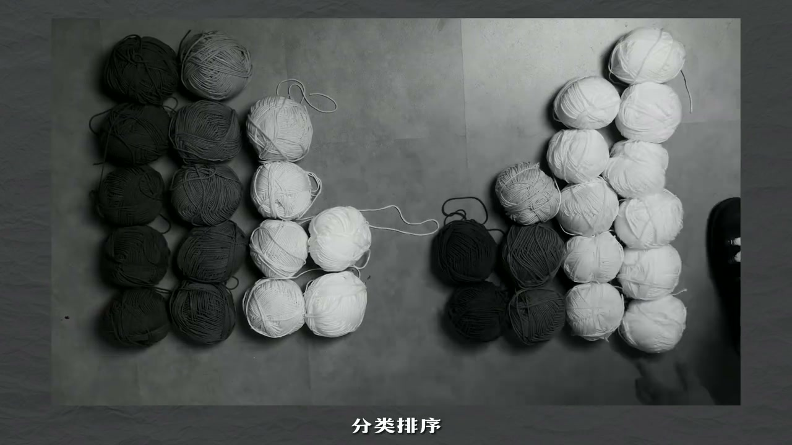
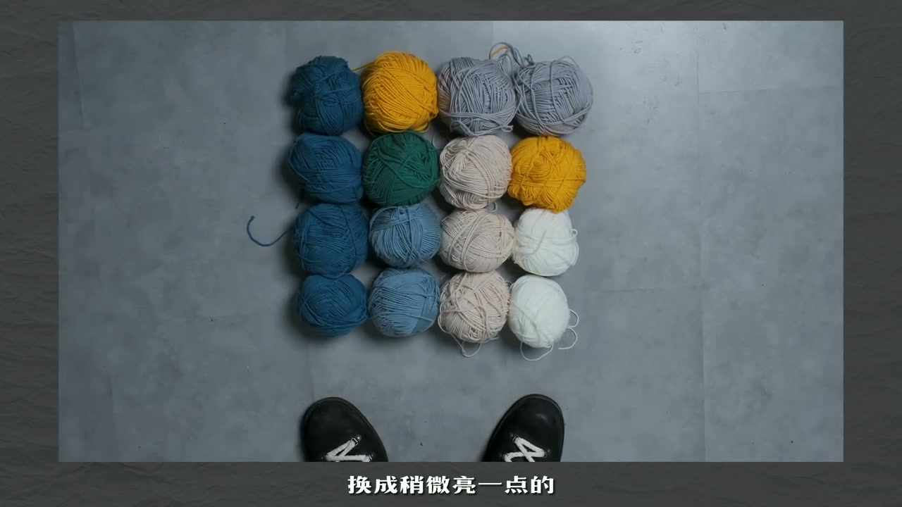
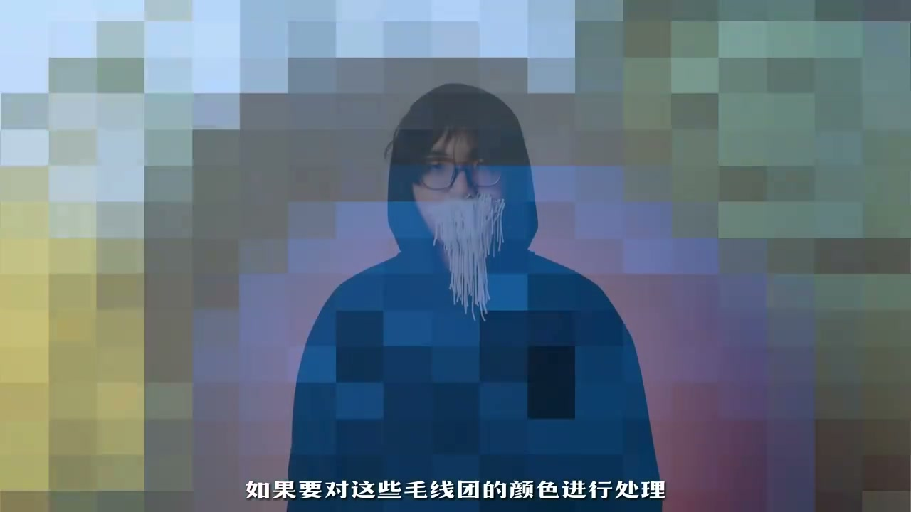
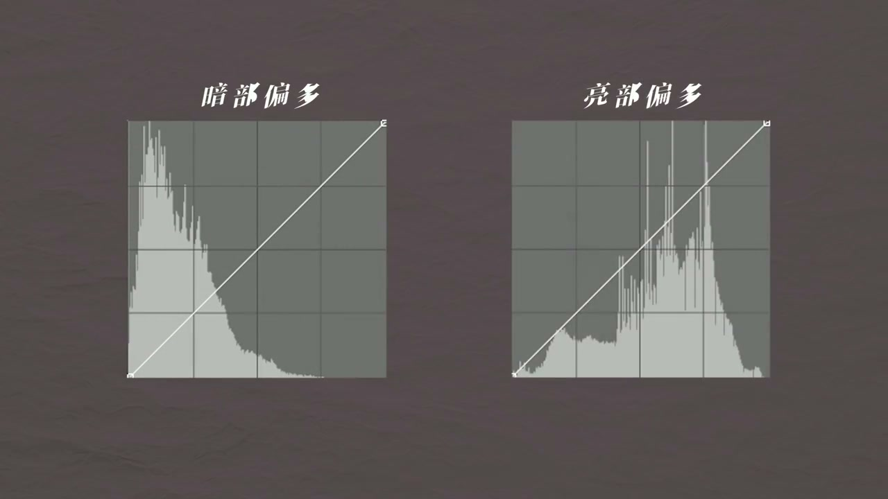

内容要点
[00:00] 这 是我的朋友不吐头
[00:02] 这 是两堆毛线
[00:04] 现在我想让他帮我区分一下
[00:05] 哪一堆毛线整体更偏岸
[00:07] 嘶 好奇怪的要求
[00:09] 明显是这一堆啊
[00:11] 你这是属于拍脑门
[00:12] 有没有更年纪的方法
[00:14] 嗯 让我想想
[00:15] 哎 先让我换一副能量视线
[00:17] 变成黑白的眼镜
[00:19] 这样毛线团的亮暗
[00:20] 看起来会更加明显
[00:21] 接下来只要把毛线团
[00:22] 从亮到暗分类排去
[00:24] 由此可见
[00:25] 左边这一堆偏岸的毛线团
[00:27] 更多 整体更偏岸
[00:29] 嗯 很严谨
[00:30] 上进两个币吧
[00:32] 现在呢 我想让这堆毛线这一件毛衣
[00:34] 但是呢
[00:34] 又不想让这个毛衣的对比度那么高
[00:36] 啊 懂了懂了
[00:37] 只要先降低亮部
[00:38] 也就是把最亮的毛线团
[00:40] 换成稍微暗一点的
[00:41] 再提高暗部
[00:42] 也就是把偏暗的毛线团
[00:44] 换成稍微亮一点的
[00:47] 哎 先别走
[00:48] 我突然感觉蓝色不太适合我
[00:50] 要不把蓝色的毛线全变成绿色的
[00:52] 感觉还差点一层
[00:53] 换成偏轻一点
[00:54] 不行 不行
[00:55] 再偏蓝一点
[00:56] 黄一点呢
[00:58] 有完没完
[00:59] 这也就崩溃了
[01:00] 那边还一大堆呢
[01:10] 在计算机对世界里
[01:12] 有一种东西很接近
[01:12] 让布图头崩溃的毛线团
[01:15] 就是组成图像的方向像素
[01:17] 只不过数量和颜色都更加繁多
[01:19] 一张4K分辨率的图像
[01:21] 包含的像素块
[01:22] 达到880万以上
[01:23] 常见的巴比特色身
[01:24] 就可以表现超过1600万种颜色
[01:27] 也就是说
[01:27] 如果我们真正用毛线团
[01:29] 带T像素
[01:29] 来拼出一段4K巴比特的动态视频
[01:32] 至少需要几千万个
[01:33] 不同颜色的毛线团
[01:35] 如果要对这些毛线团的颜色进行处理
[01:37] 大概会耗费布图头的一生
[01:41] 这一切对于计算机来说
[01:43] 耗费的时间不过是分秒之间
[01:45] 只给你们点三连化的时间一样
[01:47] 在所有具备调色功能的软件中
[01:50] 计算机都会对图像进行像素分割
[01:52] 将像素像排列毛线团那样
[01:54] 从左到右
[01:55] 从暗到亮进行排列
[01:57] 形成我们熟悉的直方图
[01:59] 让我们可以直观的看到
[02:00] 整张图片是暗部偏多
[02:01] 还是亮部偏多
[02:03] 从而判断图像属于暗调
[02:04] 还是亮调
[02:06] 计算机会如何对图像的亮度
[02:08] 色相和保护度进行调整的呢
[02:10] 让我们再次把像素转回为毛线团
[02:13] 当我们需要对不同类型的毛线团进行调整时
[02:16] 可以像这样拉出一根线
[02:17] 再把所有的毛线团都牵引到这条线上
[02:21] 当我们调整这根主线的某一段时
[02:23] 与这一段相关连的毛线团
[02:24] 就会受到影响
[02:26] 计算机中的调色曲线也是类似的原理
[02:29] 我们只要清楚曲线
[02:30] 关连的像素的什么属性
[02:32] 以及拉动曲线时
[02:33] 变化的是什么
[02:35] 就能快速上手所有软件中的调色曲线
[02:38] 比如最常见的RJP曲线
[02:40] 操作栏中这一根白色线
[02:41] 关连的是图像中不同亮暗的像素
[02:44] 拉动它时
[02:45] 变化的是这些像素整体的亮暗
[02:47] 我们可以通过拉动曲线
[02:49] 让亮部更亮
[02:50] 暗部更暗
[02:51] 增加图像的对比度
[02:52] 反之则减小对比度
[02:54] 而切换到这根红色的线
[02:56] 曲线关连的依然是不同亮暗的像素
[02:58] 只不过拉动曲线时
[03:00] 变化的将是像素红色的数量
[03:02] 借助这条曲线
[03:03] 我们可以让画面中的亮部和暗部
[03:05] 分别偏向于红色或青色
[03:07] 而让我伤痛脑筋的蓝色毛线团变绿色
[03:10] 则可以借助关连像素色相的色相
[03:12] 与色相曲线来轻松完成
[03:15] 作为调色师们必不可少的工具
[03:17] 调色曲线的原理并不复杂
[03:20] 但就是这样简单的工具
[03:21] 让我们能够随心所欲的
[03:23] 调整现实生活中难以改变的颜色
[03:25] 尽情挥杂我们的审美和对画面的理解
[03:28] 构建起属于我们的影像世界



